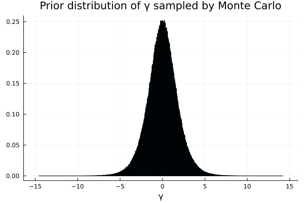

Exercise 4.6 Solution - Hoff, A First Course in Bayesian Statistical Methods
標準ベイズ統計学 演習問題 4.6 解答例
Table of Contents
answer
a, b = 1, 1 θ_prior_mc = rand(Beta(a, b), 1000000) γ_prior_mc = map(θ -> log(θ/(1-θ)), θ_prior_mc)

This prior is informative about \( \gamma \) because this gives us information that \( \gamma \) is symmetrically distributed around 0.